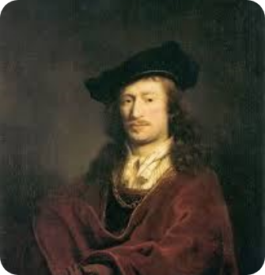
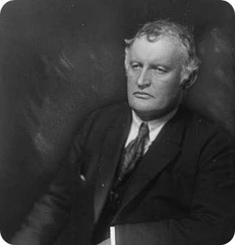
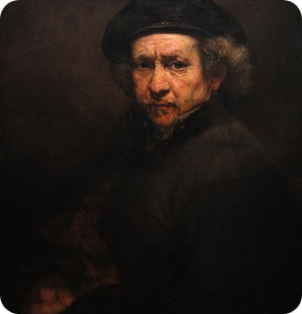
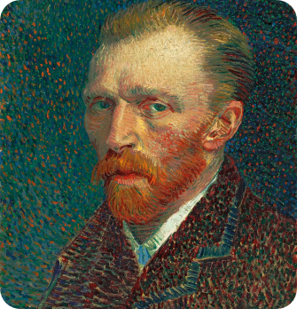

يوهانس فيرمير
رسام هولندي في الفترة الباروكية يعتبر من أكبر فناني القرن الـ17 الميلادي في أوروبا اشتُهر بشكل خاص بمعالجته الفريدة واستخدامه للضوء في أعماله

إدوارد مونش
رساماً تعبيرياً وطباعاً نرويجياً تعد لوحة " الصرخة " أشهر أعمال الفنان مونك كانت من بين سلسلة لوحات سماها الفنان باسم "إفريز الحياة"

رامبرانت فان راين
رسام هولندي لديه قوة تعبيرية كبيرة تتميز بها أعماله ولوحاته الشخصية، بالإضافة إلى معرفته العلمية بنظريات الضوء والظلال

فنسنت فان جوخ
رساماً هولندياً، مصنف كأحد فناني الانطباعية ان من أشهر فناني التصوير التشكيلي. اتجه للرسم التشكيلي للتعبير عن مشاعره وعاطفته